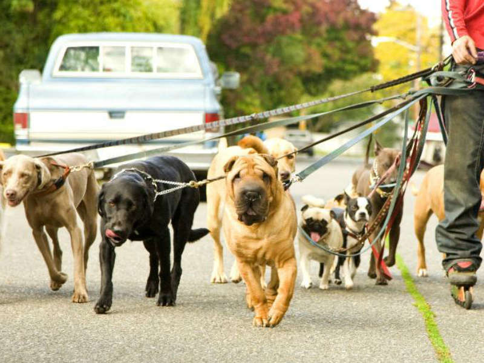
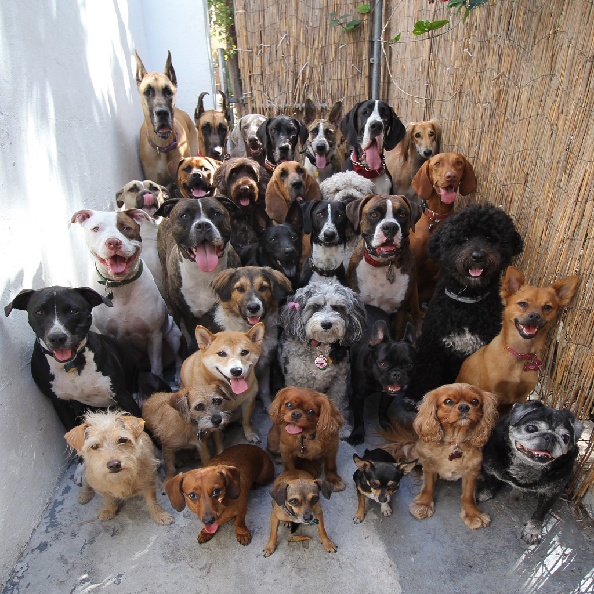

✦ Ovo preduzeće je navelo da poziva sve građane, prave ljubitelje životinja, koji su zainteresovani da se druže sa napuštenim psima i mačkama u opuštenoj atmosferi u Prihvatilištu, koji žele da volontiranjem pomognu oko brige o štićenicima šetnjama i nežnostima, kao i da aktivno da učestvuju u što lakšem i boljem pronalaženju udomitelja samom socijalizacijom i druženjem
✦ "Čovekov jedini potpuno nesebičan prijatelj u ovom sebičnom svetu, jedini koji ga nikad ne napušta, jedini koji se nikad neće pokazati nezahvalnim i koji ga nikad neće izdati jest njegov pas. On će stajati verno uz njega u bogatstvu i u siromaštvu, u dobru i u zlu. Spavaće na hladnom tlu, na ledenom vetru i snegu samo da bude uz svoga gospodara. Lizaće ruku koja mu ne može ponuditi hranu, lizaće rane koje nastaju u dodiru s okrutnošću sveta. Čuvaće svog siromašnog gospodara kao kralja. Ostaće uz njega i kad ga svi drugi napuste.”
✦ Ako pas ne želi da vam priđe nakon što vam je pogledao u lice, možda bi trebalo da proverite svoju savest.
- Woodrow Wilson
✦ Kako bi potpuno uživao u društvu psa, čovek ne bi uopšte trebao pokušavati da ga nauči da liči na čoveka. Nasuprot, čovek treba da se otvori prema mogućnosti da delimično postane pas.
- Edward Hoagland
